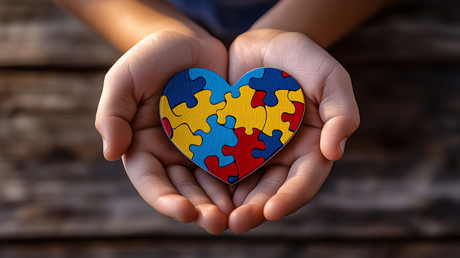

Play Therapy for Special Needs
A warm, structured play-therapy programme in Chennai where learners with special needs build social confidence, communication and emotional skills — through the natural language of play.

Play is how we learn to connect. Our structured play-therapy sessions give learners aged 12 and above a safe, guided space to explore, take turns, solve problems and express feelings. Led by trained staff, the playful format gently builds social and emotional skills, reduces anxiety and helps each learner engage more confidently with others.
What sessions support
- Social interaction and turn-taking
- Communication and self-expression
- Emotional understanding and regulation
- Problem-solving through guided play
- Confidence and reduced anxiety
Who this programme is for
Learners (12+) who build skills best through play and interaction — including those with autism, intellectual disabilities and mental-health conditions.
Outcomes
- Stronger social and communication skills
- Better emotional understanding and regulation
- Increased confidence in group settings
- A safe space to express and grow
Frequently asked questions
Isn't play therapy just for young children?
Structured play is a powerful, dignity-respecting tool across ages; we adapt activities to suit each learner aged 12 and above.
What happens in a session?
Trained staff guide playful, structured activities that build social, communication and emotional skills in a safe space.
Is it one-to-one or group?
We use both, blending group play for social skills with one-to-one support as needed.
How does it help my child?
Play reduces anxiety and opens up communication, helping learners connect and build confidence over time.